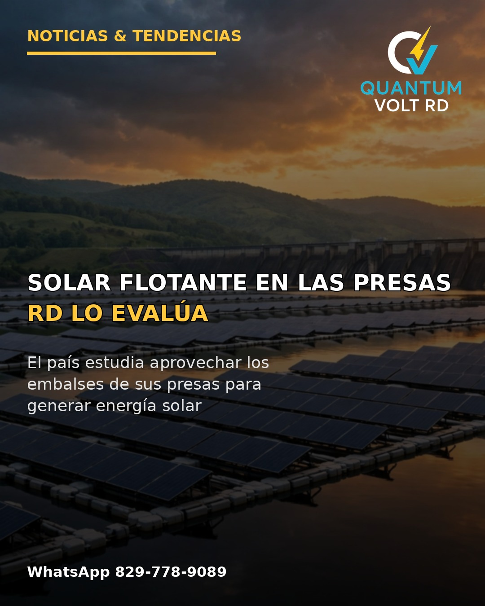

Noticia · 24 de noviembre de 2026
¿Paneles solares flotando en las presas de RD?
24 de noviembre de 2026 · Energía solar · República Dominicana

República Dominicana está evaluando instalar paneles solares flotantes en los embalses de sus presas, para generar más energía limpia sin ocupar tierra. Todavía es una evaluación, no un proyecto aprobado: el país estudia los costos y beneficios antes de decidir.
Lo informó Max Puig, vicepresidente ejecutivo del Consejo Nacional para el Cambio Climático y Mecanismo de Desarrollo Limpio (CNCCMDL), tras la Quinta Reunión del Comité Regional para Latinoamérica y el Caribe de la Alianza Solar Internacional (ISA), celebrada en Nueva Delhi, India.
Asistencia técnica y financiamiento de la ISA
La Alianza Solar Internacional podría canalizar la asistencia técnica y el financiamiento para el sistema fotovoltaico flotante, aprovechando la superficie acuática de algunas presas. Está pendiente la ratificación por el Congreso del acuerdo de adhesión de República Dominicana a la ISA, lo que mejoraría el acceso del país a programas y proyectos solares.
Riego agrícola con bombas solares
En paralelo se conversa con la ISA, la Comisión Nacional de Energía (CNE), el Ministerio de Energía y Minas, la Comisión de Fomento a la Tecnificación de Riego y la FAO en República Dominicana un programa de suministro de agua para riego agrícola con bombas operadas con energía solar. Es el mismo tema del riego inteligente, ahora a escala agrícola nacional.
Qué significa para tu casa
En tu casa no hay que esperar: panel + batería ya te dan luz propia en la noche y en el apagón. En Quantum Volt RD instalamos tu sistema solar con baterías, dimensionado para tu casa o negocio, para que un apagón no te detenga.
Cotiza tu sistema solar con baterías por WhatsApp: 829-778-9089Fuentes
- Resumen Turismo, 24 de noviembre de 2026: Gobierno evalúa instalación de paneles solares flotantes en embalses de las presas
← Volver a la página principal de Quantum Volt RD · Ver todas las noticias →